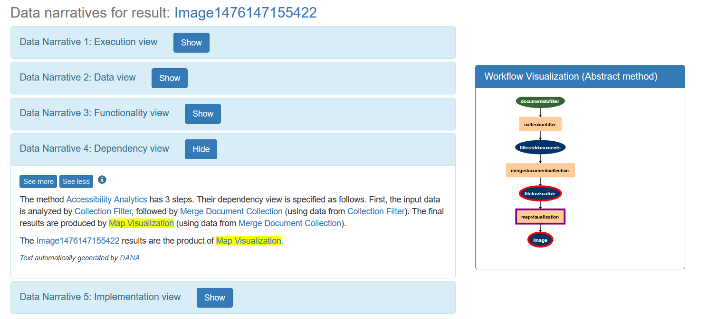

Data Narratives are containers of information about computationally generated data.
Check out some Data Narratives examples or browse the code on Github.
Data narratives have three major components:
Different narrative accounts can be generated, each for a separate audience with different content and details. Data narratives help make science more transparent, because they ensure that the resources are persistent (always accessible) and that the generation of the data is presented in a way that humans can easily use.
For example, consider the result Image1476159251570 , product of a workflow for topic detection. A possible data narrative, focused on the execution view, would be the following:
The Detect Topics method was run on dataset stop W.txt (input WordsToRemove) and dataset File.txt (input DocumentToFilter), with NUMBER1476159251570 set to 10 and ITERATIONS1476159251570 set to 5. The Image1476159251570 results are stored online.
Text automatically generated by DANA.
While a narrative focused on the data view would be:
The Image1476159251570 results have been derived from the dataset File.txt (input DocumentToFilter) and dataset stop W.txt (input WordsToRemove).
Text automatically generated by DANA.
Other narratives may focus on the method view used to produced the result, step by step view or a software view with the description of the particular algorithms and implementations used to obtain the results. Browse the rest of the Data Narratives of the image results if you want to see other narratives.
This branch of the project explores the idea of linking data narratives with their corresponding workflow visualizations. Text will be highlighted when clicking on the elements of the image and viceversa, making it easier to follow the description of every step. The image below shows an example, where the text corresponding a workflow step is highlighted in yellow on the left when clicking on the image of the right:
DANA-Vis was possible thanks to Vijetha Parampally and Shravya Gorur.
This branch of the project consists on a Polymer application that allows users to edit and view changes done to narratives by others. Check the video below for a demo!
DANA-Feedback was possible thanks to Shreyas Kolpe and Sanjana Srinivasa.